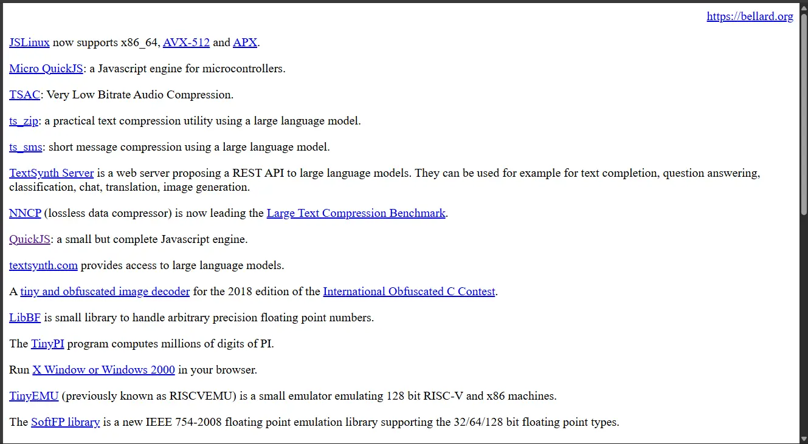

The Joy of Boring Websites
There is something strangely satisfying about a website that doesn't try very hard to impress you.
No giant hero section. No animated blobs floating behind the heading. No cookie banner covering half the screen. No twelve megabytes of JavaScript just to display a paragraph. And no annoying circles following your mouse cursor.
Just a document. That is what I wanted this website to be.
I got the inspiration from a legendary programmer's personal website. Fabrice Bellard. He is the guy behind FFmpeg, QEMU and TCC. And this is what his website looks like...

bellard.org Yep, not even minimal css just raw html
Why? Because HTML is already pretty good
HTML has surprisingly useful set of building blocks. There are headings, paragraphs, lists, tables, quotations, links, images, code, and more. These are more than enough.
For example, this is strong (bold) text, this is emphasized (italic) text, and this is a link to MDN.
You can also write inline code without needing a
special component for it.
Headings have a purpose
A heading is useful because it describes the structure of the document. It doesn't need to be a giant piece of decorative typography.
This is a fourth-level heading
Sometimes an article needs another level of hierarchy.
This is a fifth-level heading
I probably won't use this very often.
This is a sixth-level heading
And I'm pretty sure I won't use this one at all.
Lists
Here's an unordered list:
- HTML
- CSS
- JavaScript
- Some other language
And here's an ordered list:
- Write code.
- Draw art.
- Make audio.
- Question your life choices.
- Ship.
Lists can be nested too:
-
Languages
- C
- Odin
- Lua
-
Tools
- Sublime Text
- Affinity
- Reaper
Blockquotes
Simplicity is the ultimate sophistication.
Leonardo da Vinci
Code
Here's a tiny C program:
#include <stdio.h>
int main(void)
{
printf("hello, world\n");
return 0;
}package quine
import "core:fmt"
main :: proc() {
fmt.printf("%s%c%s%c;\n", s, 0x60, s, 0x60)
}
s := `package quine
import "core:fmt"
main :: proc() {
fmt.printf("%s%c%s%c;\n", s, 0x60, s, 0x60)
}
s := `;Here is the same quine in c:
main(){char*s="main(){char*s=%c%s%c;printf(s,34,s,34);}";printf(s,34,s,34);}
The important distinction is between code that appears inside a
sentence, such as malloc(), and a larger block of code.
Keyboard input
Sometimes you want to tell the reader to press a key: Ctrl + C.
Or perhaps: Ctrl + Shift + P.
Tables
Tables are useful when information actually has a tabular structure. (Duh)
| Language | Year | Opinion |
|---|---|---|
| C | 1972 | Still excellent |
| Odin | 2016 | Joy |
| JavaScript | 1995 | Somehow everywhere |
| Lua | 1993 | 1 based indexing :/ |
Definitions
- HTML
- A markup language used to describe the structure of documents on the web.
- CSS
- A language for describing how documents should be presented.
- HTTP
- A protocol used for transferring resources over a network.
Images
A few more HTML elements
Here is some highlighted text.
This word is wrong and this one is
correct.
Water is H2O and two squared is 22.
The abbreviation API shows a tooltip when you hover over it.
The meeting starts at .
You can also use strikethrough when something is no longer
accurate or relevant.
Details and disclosure
Click to reveal a secret
There is no secret. You clicked a native HTML element.
Horizontal rules
Sometimes you simply want to separate two sections of an article.
That's what this is for.
What about forms?
A blog doesn't necessarily need forms, but the browser already gives us reasonable controls for them.
(Nothing happens if you press this)
The point
None of these elements are particularly exciting. That's exactly why I like them.
A good document doesn't need to fight for your attention. It should make the content easy to read and then get out of the way.
There is a certain freedom in realizing that you don't have to reinvent everything.
Sometimes a heading can just be a heading. Sometimes a link can just be a blue link. And sometimes a website can just be a website.
Explore
If you are interested in looking into other sites like this, check out The 512KB Club.